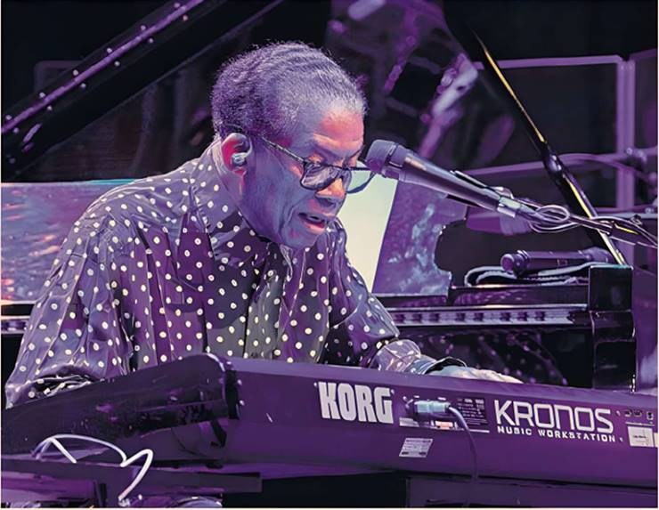

Mike Hobart

Herbie Hancock’s current, somewhat avuncular stage persona makes much of his fellow musicians’ accomplishments while making light of his own. Trumpeter Terence Blanchard, he said, has composed more than 60 scores for film and TV and James Genus has held the bass chair on the Saturday Night Live band for 24 years.
Hancock’s opening words introduced the keyboard program he was toying with as “prehistoric predator” and then self-deprecatingly added that he’d been performing for over 50 years. Yet it was Hancock’s musical vision that shaped the evening, his energy that brought the audience to its feet and his strength of character that let his musicians’ prodigious talents fly.
Hancock’s vast and varied catalogue spans 1960s acoustic modernism and the avant-garde to world music, heavily amplified funk and hip-hop. And he remains a forceful influence in the lineage of jazz piano. At this gig, the first of three marking the pianist’s 85th birthday year, he dipped into that huge back catalogue, referencing each strand and moulding them anew into something contemporary and fresh.
The repertoire was familiar and the line-up unchanged from his previous Barbican show in 2023. An “Overture” of what he described as bits and pieces had solos for all, while condensing a large chunk of recent musical history into a riveting kaleidoscope of styles. Once more, Wayne Shorter’s “Footprints”, rearranged by Blanchard, and Hancock’s “Butterfly” followed. But with rhythms shifting, a stronger jazz vibe and themes either stretched or played as hints, it was more than the band’s improvisations that made this performance unique.
Hancock maintained the watery squelches, howls and jungle noises of the “prehistoric predator” program for a while before the band eased in with rattles, taps and a quiet bass drone. Blanchard’s trumpet, full-toned and clear, signalled funky moves, backbeats rattled bones and the performance was underway. Soon, blaxploitation riffs morphed into fine-tuned modern jazz, solos reached crowd-raising highs and an unaccompanied Lionel Loueke conjured an entire band using the pedals of his guitar. Thirty minutes later, and playing without pause, the band stretched out on an up-tempo, straight-ahead “Chameleon.”
As the night progressed, the rearranged “Footprints” switched from playful bounce to night-time prowl and “Actual Proof” pulsated with the youthful high-octane vigour of Jaylen Petinaud’s drumming — the controlled virtuosity of the orchestrated solos he sprinkled through the set were a highlight.
The piece is now a standard bearer of classic jazz funk, but its roots lie in a seductive ballad that Hancock wrote for the score of the racially conscious spy spoof, The Spook Who Sat by the Door (1973).
“Butterfly” followed, its theme stretched over a bed of subtle funky beats, and then Hancock, half singing through a vocoder, noted difficult times, the commonality of humankind and called for AI to be taught ethical behaviour.
The segue into Loueke’s unaccompanied, jaw-dropping blend of fugue, funk and Beninese roots was seamless.
The gig played out with a funky triptych of “Hang Up Your Hangups”, “Spider” and “Rockit”, though once again, the band darted off at tangents. A reprised and funky “Chameleon” was the closer, with Hancock on keytar.
For more than two hours, Hancock and his band had delivered dazzling solos, emotional focus and uncanny mutual rapport. Hancock’s place in history as stylist and composer has long been assured. This concert confirmed him as a bandleader of stature.
Touring to November, herbiehancock.com